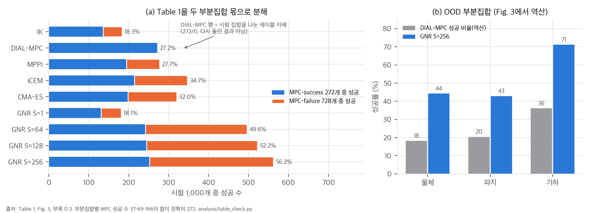
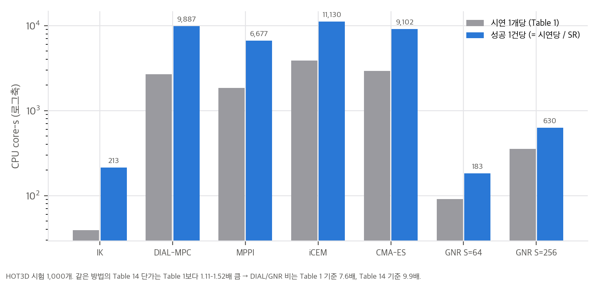
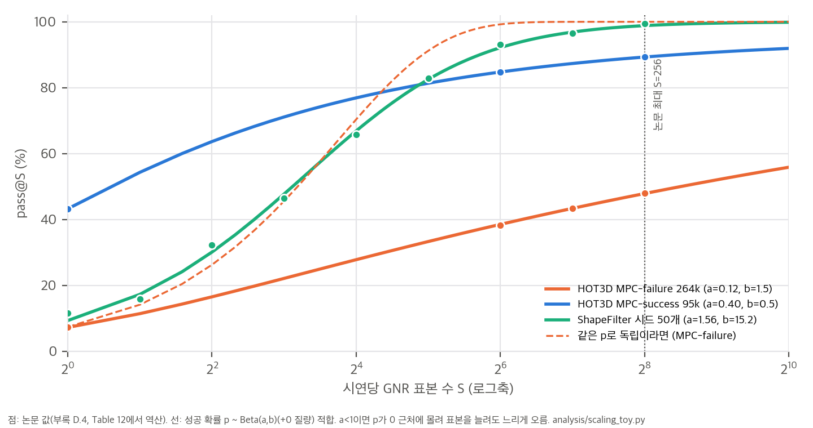
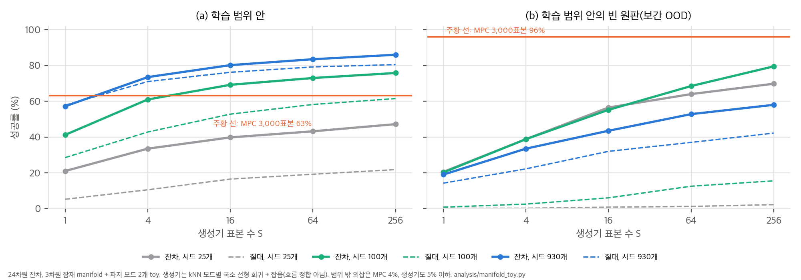

그림: Table 1을 MPC-success 272개와 MPC-failure 728개 안의 성공 수로 분해(직접 계산, `03` §1).
YY-GX/GNR은 프로젝트 페이지 저장소이고, README에 "Code and Dataset buttons are omitted until release"라고 적혀 있습니다. 223k 데이터셋도 아직 공개되지 않았습니다.©, copyright, rights, license 검색 0건, PDF 메타데이터 Creator는 arXiv GenPDF). CC BY가 아니므로 논문 그림은 개인용 리포트와 PPT에만 넣고, 게시본에서는 뺐습니다.한 줄 요약: 사람 시연을 로봇손 궤적으로 바꿀 때 시연마다 sampling MPC를 새로 돌리지 않습니다. 대신 MPC가 이미 푼 궤적으로 **IK 기준 제어에 더할 잔차의 조건부 생성 모델(flow matching)**을 학습하고, 새 시연에서는 후보 S개를 뽑아 시뮬레이터로 걸러 냅니다(pass@S). 정밀하고 긴 과제에서는 생성 결과를 MPC 초기값으로 씁니다.
저자들의 가설은 "동역학적으로 가능한 궤적은 시연들이 공유하는 저차원 manifold 근처에 모여 있다"입니다(Abstract, Sec. 3.1). 기여로 내세우는 것은 두 가지입니다(Sec. 1).
리타겟팅은 IK로 얻은 운동학 레퍼런스 x̄_{0:T}(로봇·물체 상태)를 받아, 물리에서 이를 재현하는 제어열 u_{0:T−1}을 찾는 제약 최적화입니다. 정식화는 SPIDER(Pan et al., 2025)를 따릅니다.
min_u J(u_{0:T−1}) s.t. x_{t+1} = f(x_t, u_t), x_{0:T} ∈ X, u_{0:T−1} ∈ U
접촉이 많아 J는 비볼록하고 불연속입니다. 그래서 MPPI, DIAL-MPC 같은 sampling 최적화가 표준인데, 저자들이 지적하는 문제는 두 가지입니다. 과제와 무관한 잡음으로 탐색해서 표본 효율이 낮고, 시연마다 독립적으로 풀어서 앞 시연의 해가 다음 시연에 도움이 되지 않습니다.
시뮬레이터는 SuperDex Physics(Meta의 "Mochi team" 암시적 접촉 엔진)입니다. 비볼록 충돌 형상과 공간에 분포된 3D 접촉력을 지원합니다(Sec. 5.1).
| 과제 | 로봇 | 시연 | 학습/시험 | 성공 기준 (Table 4) | MPC 예산 (Table 5) |
|---|---|---|---|---|---|
| HOT3D | DG-5F 손만 (26-D) | 사람 동작 780개 → 증강 360,150개, 약 2 s | 28,480 / 1,000 | 150 mm, 40°, 침투 ≤ 5 mm, 쥐는 힘 ≥ 1 N, 손가락 힘 p95 ≤ 100 N | 300 × 10 = 3,000 |
| ShapeFilter | FR3 + DG-5F (29-D) | mocap 605개 → 자세 증강 3,037개, 11.0 s | 2,448 / 589 | 십자 부품 중심이 삽입 영역(16 cm 상자) 안. 구멍 여유 1.96 mm | 500 × 6 = 3,000 |
| NIST | 양팔 FR3 + DG-5F (29-D) | mocap 358개, 29 s | 294 / 64 | 수평 오차 < 1 mm, 8 mm 이상 체결, 축 오차 < 0.003 rad | 3단계 합계 3,440 |
시험 집합: 학습에 없던 물체(203), 학습에 없던 파지(338), 학습에 없던 기하 변형(459)으로 1,000개를 뽑았습니다. DIAL-MPC 기준으로 272개가 MPC-success, 728개가 MPC-failure입니다.
| 방법 | S | core-s | 전체 SR | MPC-success SR | MPC-failure SR | MPC-failure E_pos (mm) |
|---|---|---|---|---|---|---|
| IK | 1 | 39.0 | 18.3 | 50.0 | 6.5 | 54.5 |
| DIAL-MPC | 3,000 | 2,689 | 27.2 | 100 | 0 | 36.3 |
| MPPI | 3,000 | 1,850 | 27.7 | 71.3 | 11.4 | 36.9 |
| iCEM | 3,000 | 3,862 | 34.7 | 78.7 | 18.3 | 26.0 |
| CMA-ES | 3,000 | 2,913 | 32.0 | 72.8 | 16.8 | 32.9 |
| GNR | 1 | 48.9 | 18.1 | 48.2 | 6.9 | 54.5 |
| GNR | 64 | 90.9 | 49.6 | 89.0 | 34.9 | 37.1 |
| GNR | 256 | 354.1 | 56.2 | 92.6 | 42.6 | 36.2 |
해석:
03 §2에서 다룹니다.04 C4). 공정한 비교 대상은 MPPI, iCEM, CMA-ES이고, 그중 가장 좋은 iCEM이 34.7%입니다.04 C3).ShapeFilter(십자 부품 삽입):
NIST(M8 노브 체결, 29초):
별도 한계 절은 없습니다. 결론에서 실물 전이(sim-to-real)를 향후 과제로 들고, NIST처럼 긴 과제에서는 open-loop 생성만으로 부족하다고 인정합니다(Sec. 5.3, 6). 모든 결과는 시뮬레이션이고 실물 로봇 실험은 없습니다.
04 C1, C4).04 C5, 03 §4).03 §2).04 C6, 03 §2.3).04 C7).04 C8–C10).04 C12).03 §3).03 §3).02 §5).GNR의 주장은 대부분 "표본 S개 중 하나라도 통과하면 성공"이라는 pass@S와 CPU 비용 회계에 기대고 있습니다. 이 문서는 (1) Table 1의 구조, (2) pass@S 곡선이 왜 그렇게 생겼는지, (3) "가능한 해가 저차원 manifold 근처에 있다"는 가설의 toy, (4) "시연" 단위, (5) 비용 회계를 다룹니다. 모든 계산은 CPU 단일 스레드 numpy·scipy이고 각 스크립트는 수 초에서 수십 초 걸립니다.
| 스크립트 | 결과 파일 | 내용 |
|---|---|---|
analysis/table_check.py |
table_check_results.json |
표·본문·부록 재계산 C1–C12 (04 §1) |
analysis/scaling_toy.py |
scaling_toy_results.json |
pass@S 이질성 모델 적합, 조기 종료 비용 |
analysis/manifold_toy.py |
manifold_toy_results.json |
manifold 가설 toy: 생성기 대용 대 annealed CEM |
analysis/plot_figures.py |
report/figures/*.png |
이 문서의 그래프 네 장 |
04 C2–C4)그림 1. (a) Table 1의 각 행을 MPC-success 272개와 MPC-failure 728개 안의 성공 수로 나눈 것. 9개 행 모두 정수 개수로 정확히 맞습니다. (b) Fig. 3과 부록 D.3에서 역산한 OOD 부분집합별 DIAL-MPC 성공 비율과 GNR S=256.

그림 2. HOT3D 시험 1,000개에서 시연 1개당 비용과 성공 1건당 비용(= 시연당 비용 / SR). GNR S=64는 성공 1건당 183 core-s로, DIAL-MPC 9,887 core-s의 1/54입니다.
성공 1건당 비용으로 보면 차이가 더 큽니다. 비율로 계산되는 이 지표는 시험 집합 분할의 영향을 받지 않습니다. 다만 IK도 213 core-s로 매우 싸다는 점을 같이 봐야 합니다. GNR S=64(183 core-s)가 IK보다 싼 이유는 IK의 성공률이 낮아서입니다.
시연 i를 GNR이 표본 하나로 풀 확률을 p_i라고 합시다. 표본들이 조건부 독립이면 pass@S = 1 − E[(1 − p)^S]입니다. 모든 시연의 p가 같다면 S=1 성공률 p_1에서 곡선이 정해집니다. HOT3D MPC-failure는 p_1 = 6.87%이므로 pass@64가 98.9%여야 하는데, 실제로는 34.9%입니다. 시연마다 p가 크게 다릅니다.
p의 분포를 "아예 못 푸는 비율 π0 + 나머지는 Beta(a, b)"로 두면 닫힌 꼴이 나옵니다.
E[(1 − p)^S | Beta] = B(a, b + S) / B(a, b)
pass@S = (1 − π0) · (1 − B(a, b + S) / B(a, b))
S가 크면 B(a, b + S)/B(a, b) ≈ Γ(a + b)/Γ(b) · S^(−a)이므로 실패율이 S^(−a)의 거듭제곱 꼬리로 줄어듭니다. 표본을 두 배로 늘릴 때마다 (π0를 뺀) 실패가 2^(−a)배가 됩니다. a는 "p가 0 근처에 얼마나 몰려 있는가"를 나타내는 하나의 숫자입니다.
조기 종료(성공하면 추출 중단)를 할 때 기대 표본 수는 다음과 같습니다.
E[min(T, S)] = Σ_{k=0}^{S−1} P(처음 k개 모두 실패) = Σ_{k=0}^{S−1} [π0 + (1 − π0) · B(a, b + k)/B(a, b)]
scaling_toy.py)
그림 3. 논문 값(점)과 이질성 모델 적합(선). 주황 점선은 모든 시연의 p가 같다고 가정한 예측입니다. HOT3D MPC-failure는 a = 0.12라서 로그축에서도 거의 직선으로 천천히 오릅니다.
| 곡선 (출처) | π0 | a | b | RMSE (%p) | 시연당 평균 p | S=1024 외삽 | 조기 종료 시 기대 표본 (S=256) |
|---|---|---|---|---|---|---|---|
| HOT3D 시험 MPC-failure 728 (Table 1) | 0.21 | 0.14 | 1.46 | 0.35 | 0.069 | 48.8% | 163 |
| HOT3D 360k MPC-failure (D.4) | 0.00 | 0.12 | 1.55 | 0.18 | 0.072 | 55.8% | 151 |
| HOT3D 시험 MPC-success 272 (Table 1) | 0.04 | 0.46 | 0.46 | 0.42 | 0.48 | 94.2% | 29 |
| HOT3D 360k MPC-success (D.4, 점 3개) | 0.05 | 0.40 | 0.48 | 0 | 0.43 | 91.9% | 38 |
| ShapeFilter State (Table 11) | 0.00 | 0.84 | 0.81 | 0.31 | 0.51 | 99.7% | 8 |
| ShapeFilter 시드 N=2,448 (Table 12 역산) | 0.00 | 0.78 | 0.70 | 0.21 | 0.53 | 99.7% | 8 |
| ShapeFilter 시드 N=50 (Table 12 역산) | 0.00 | 1.56 | 15.2 | 1.33 | 0.09 | 99.9% | 23 |
읽는 법:
제안: pass@256 하나 대신 (a, 평균 p)를 함께 보고하면 "표본을 더 쓰면 얼마나 오르는가"를 예측할 수 있습니다.
Table 1의 비용은 S에 거의 비례합니다(S=64 → 128 → 256에서 표본당 1.37 core-s). 그래서 조기 종료 없이 잰 값으로 봅니다. 부록 D.4는 확장 실험에서 "성공하면 추출을 멈춘다"고 쓰지만, 비용 추정(App. G.2)은 "모든 시연에 전체 예산을 쓴다"고 명시하고 354.1 core-s를 그대로 곱했습니다. 즉 논문의 GNR 비용은 상한입니다.
표본당 1.197 core-s, 고정 비용 47.7 core-s로 근사하고(S=1 → 256 기울기) 적합한 분포의 기대 표본을 쓰면 다음과 같습니다.
| 항목 | 논문 (전체 예산) | 조기 종료 추정 |
|---|---|---|
| MPC-failure 264,806개 확장 | 26,047 core-h | 약 16,800 core-h |
| 실제 배치 시나리오의 GNR 부분 (331,670개) | 32,623 core-h | 약 18,600 core-h |
| 실제 배치 시나리오 전체 대비 MPC 절감 | 2.62배 | 약 2.90배 |
반대로 이 시나리오에서 MPC 시드 비용(116.1k core-h)이 전체의 78%입니다. GNR 비용이 0이어도 절감은 390.0 / 116.1 = 3.36배를 넘지 못합니다. 더 줄이려면 시드 수를 줄여야 하고, 그 대가는 §2.2의 a가 작아지는 것(무거운 꼬리)으로 나타날 가능성이 큽니다.
manifold_toy.py)질문: 가능한 해가 조건 c에 매끄럽게 의존하는 저차원 집합 근처에 있으면, 풀린 시연에서 배운 조건부 생성기가 시연마다 처음부터 찾는 sampling 최적화보다 적은 표본으로 푸는가? 그 이득은 어디까지 유지되는가?
설정: 물리 시뮬레이션이 아니라 기하만 남긴 장난감입니다.

그림 4. 생성기 대용의 pass@S. (a) 학습 범위 안, (b) 학습 범위 안의 빈 원판(보간 OOD). 주황 선은 MPC 3,000표본. 학습 범위 밖 외삽(c1 ∈ [1, 1.6])은 MPC 4.5%, 생성기 4.5% 이하라 그리지 않았습니다.
| 시드 수 N | 범위 안 pass@1 / @16 / @256 (잔차) | 범위 안 @256 (절대) | 빈 원판 @256 잔차 / 절대 | 범위 밖 @256 | MPC-failure 147개 중 생성기가 푼 비율 (@256) |
|---|---|---|---|---|---|
| 25 | 21.0 / 39.8 / 47.2 | 21.8 | 69.8 / 2.2 | 0 | 2.7% |
| 100 | 41.2 / 69.2 / 75.8 | 61.5 | 79.5 / 15.5 | 0 | 38.1% |
| 400 | 54.8 / 71.8 / 80.0 | 73.2 | 74.0 / 45.5 | 3.2 | 46.3% |
| 930 | 57.2 / 80.2 / 86.0 | 80.5 | 58.0 / 42.2 | 4.5 | 61.9% |
| MPC 3,000표본 | 63.2 | 96.0 | 4.5 | (정의상 0%) |
해석:
04 C5)부록 C.5와 Table 8을 맞춰 보면, 기하 변형 쪽 "시연"은 (사람 동작, 기하 변형) 쌍에 최적화 시드를 곱한 최적화 시도입니다.
| 단위 | 개수 | MPC 성공 |
|---|---|---|
| 동작-변형 쌍 | 728 × 10 = 7,280 | 2,723쌍 (37.4%) |
| 시도 = 쌍 × 시드 24 | 174,720 (평가 173,840, 880개 누락) | 47,918 (27.6%) |
| MPC가 푼 쌍 안의 시도 | 2,723 × 24 = 65,352 | 47,918 (73.3%) |
정리: "223k 시연, 3.3k 기하"는 사실이지만, 다양성의 실제 단위는 사람 동작 780개 × 기하 3.3k개입니다. Table 3에서 DexTrack 3,585개, SPIDER 2,885개 같은 수와 나란히 놓으면 단위가 다릅니다. 본문(222,806개, 기하 2,756개, MPC 성공률 26.43%)과 Table 8(222,480개, 2,755개, 26.47%)도 조금씩 다릅니다.
04 C6, C7)스크립트: analysis/extra_tail_and_generators.py → analysis/extra_tail_and_generators_results.json (numpy·scipy, 단일 스레드, 약 5초). 내부에서 manifold_toy.py의 함수를 재사용한다.
목적. §2.2의 HOT3D MPC-failure 꼬리 지수 a ≈ 0.14가 해결 불가능한 시연이 섞여 있어서 생기는지, 아니면 해결 가능한 시연의 p 분포 모양이 필요한지 본다.
설정(가정).
결과.
| f (실행 불가능) | α | β | 예측 S = 64 / 128 / 256 (%) | RMSE (%p) |
|---|---|---|---|---|
| 0 | 0.14 | 1.90 | 41.1 / 46.5 / 51.4 | 7.9 |
| 0.2 | 0.14 | 1.49 | 34.8 / 39.0 / 42.7 | 0.5 |
| 0.4 | 0.14 | 1.08 | 28.1 / 31.1 / 33.7 | 7.6 |
| 0.2 | 0.5 | 5.32 | 58.3 / 64.4 / 68.8 | 25.4 |
| 0.2 | 2.0 | 21.3 | 74.8 / 78.3 / 79.5 | 39.1 |
| 0.5 | 0.5 | 3.14 | 39.6 / 42.6 / 44.7 | 4.0 |
| 0.5 | 2.0 | 12.6 | 48.6 / 49.6 / 49.9 | 11.2 |
관측 곡선의 적합: π0 자유 → π0 = 0.21, a = 0.14, b = 1.46(RMSE 0.35%p). π0 = 0 고정 → a = 0.098, b = 1.30(RMSE 0.40%p).
결론.
목적. §3의 manifold toy에서 최근접 검색 기준선이 다른 조건부 생성기보다 얼마나 나은지 본다. 비교 대상은 결정론적 회귀와, (c, Δ) 결합 공간에서 EM으로 적합한 가우시안 혼합 조건부 밀도다. 실행 불가능한 시드가 섞였을 때의 변화도 함께 본다.
설정(가정).
결과.
| 시험 집합 | 오염 q | 생성기 | pass@1 | pass@16 | pass@256 |
|---|---|---|---|---|---|
| 학습 범위 안 | 0 | 검색 | 60.0 ± 2.0 | 78.7 | 83.2 ± 0.3 |
| 학습 범위 안 | 0 | 가우시안 혼합 | 8.8 ± 1.1 | 55.0 | 79.0 ± 2.0 |
| 학습 범위 안 | 0 | 결정론적 회귀 | 0 | 0 | 0 |
| 보간 원판 | 0 | 검색 | 19.0 ± 0.9 | 50.4 | 67.7 ± 1.1 |
| 보간 원판 | 0 | 가우시안 혼합 | 7.3 ± 2.8 | 54.6 | 94.4 ± 7.3 |
| 학습 범위 안 | 0.2 | 검색 | 40.4 ± 0.8 | 62.8 | 67.3 ± 1.4 |
| 학습 범위 안 | 0.2 | 가우시안 혼합 | 2.7 ± 2.3 | 25.0 | 66.6 ± 8.0 |
| 보간 원판 | 0.2 | 검색 | 11.6 ± 1.7 | 33.7 | 46.2 ± 7.1 |
| 보간 원판 | 0.2 | 가우시안 혼합 | 1.9 ± 0.9 | 27.0 | 85.5 ± 6.8 |
결론.
목적. §2의 pass@S 구조를 생성 모델 수준에서 확인합니다. 같은 과제에서 (i) 기준 행동(IK 한 번) 대비 잔차를 flow matching으로 학습한 생성기, (ii) 절대 행동을 flow matching으로 학습한 생성기, (iii) 가까운 학습 예시의 잔차를 옮기는 검색을 비교합니다.
설정(가정).
결과 (pass@S, 시드 2개 평균).
| 생성기 | S=1 | S=4 | S=16 | S=64 | S=256 | 실패율 적합 a |
|---|---|---|---|---|---|---|
| 잔차 flow | 0.039 | 0.12 | 0.39 | 0.74 | 0.96 | 0.52 |
| 절대 flow | 0.12 | 0.36 | 0.83 | 0.98 | 1.00 | 1.29 |
| 검색(잔차 옮기기) | 0.94 | 0.97 | 0.98 | 0.98 | 0.98 | 0.20 (포화) |
결론.
한계. 과제가 쉽습니다(절대 flow가 S = 256에서 0.999). 실패율 적합 a는 포화된 곡선에서 의미가 약합니다. 해가 곡선이라 "여러 해 중 하나를 맞추면 된다"는 설정이 실물 접촉보다 훨씬 관대합니다. U-Net, 학습 쌍 수, 기준 행동 품질을 바꾸면 순위가 달라질 수 있습니다. 시드 2개입니다.
YY-GX/GNR @ d6cf09e)analysis/table_check.py(C1–C12), analysis/scaling_toy.py(pass@S·조기 종료), analysis/manifold_toy.py(가설 toy). 모두 CPU 단일 스레드이고 수 초에서 수십 초 걸립니다.| # | 주장 (출처) | 재계산 | 판정 |
|---|---|---|---|
| C1 | MPC 표본의 8.5%로 56.20% 대 27.20%, 궤적당 CPU 비용 7.6배 감소 (Abstract, Sec. 5.2) | 256/3,000 = 8.53%. 2,689.3/354.1 = 7.59배(Table 1 단가) | 산술 ✅. 27.20%는 C4 |
| C2 | Table 1 전체 SR (Table 1) | 전체 = 0.272 × MPC-success + 0.728 × MPC-failure가 9개 행 모두 맞고, 성공 수가 정수(GNR S=256 = 252 + 310) | ✅ |
| C3 | OOD 부분집합, MPC-success 평균 46.2 → 93.2%, MPC-failure 31.9–58.4% (Fig. 3, App. D.3) | 부분집합별 MPC 성공 수 역산 37·69·166 = 272. 가중 평균이 Table 1의 S=1 18.1%, S=256 56.2%와 일치. MPC-success 평균 93.17% | ✅. 부분집합 난이도 차이가 큼(MPC 성공 18·20·36%) |
| C4 | DIAL-MPC 27.20% (Table 1) | 272/1,000 = 시험 집합의 MPC-success 비율 자체. 행의 100%/0%는 정의. 모집단 비율 26.47%(Table 8) | ⚠️ 비교 결과가 아니라 분할 레이블. 프로젝트 페이지 각주에만 설명 있음 |
| C5 | 223k 시연, MPC-failure 127,136개 해결 (Sec. 5.2, App. C.5, D.4, Table 8) | 기하 변형 쪽 시연 = 쌍 7,280 × 시드 24 = 174,720(평가 173,840). 쌍 단위 MPC 성공 37.4%, 시도 단위 27.6%. MPC-failure 중 17,434개(13.8%)는 MPC가 다른 시드로 푼 쌍. 본문 222,806 / 2,756 / 26.43% 대 Table 8 222,480 / 2,755 / 26.47% | ⚠️ 시도 단위 계산. 본문·표 불일치(작음) |
| C6 | 실제 배치 2.62배 감소 (Sec. 5.2, App. G.2) | 390.043 / 148.735 = 2.62 ✅. 단, MPC 시드는 Table 14 단가, GNR은 Table 1 단가. Table 14로 통일하면 2.56배. Table 14/Table 1 단가 비는 1.11–1.52. DIAL/GNR 비는 Table 14 기준 9.85배. 확장 비용은 조기 종료를 무시한 상한(App. G.2에 명시). 조기 종료 반영 추정 2.90배(03 §2.3) |
✅ 결론 유지. 단가 출처 혼용 |
| C7a | ShapeFilter Table 10 | DIAL-MPC 32×6(48.4)·CEM·iCEM·CMA-ES 값은 n=64에서 정수 비율. DIAL-MPC 500×6(92.9)은 589에서만. GNR 행(87.23, 92.26, 95.44, 97.37)은 64도 589도 아님 | ⚠️ 한 표 안에 분모가 섞임 |
| C7b | S=1에서 52.4% (Sec. 5.3) | Table 11 State 50.42%, Table 12 N=2,448에서 역산 52.56% | ⚠️ 같은 설정의 값이 표마다 다름 |
| C7c | 14.9배, 11.2배 (Table 2, App. G.2) | 10,124/678 = 14.93. 8,541.0/765.6 = 11.16 ✅. Table 2의 GNR(77표본, 94.7%)은 2,448개 모델이 아니라 N=50 모델. MPC 2,500표본 93.7%(Table 2)와 3,000표본 92.9%(Table 10)가 따로 있음 | ✅ 산술. 비교 대상 설정 확인 필요 |
| C7d | S=64에서 MPC 3,000표본 CPU 비용의 1.6% (Sec. 5.3) | Table 12는 조기 종료 비용. GNR 표본 단가 역산 38.6 core-s(MPC 롤아웃의 약 10배). S=64는 조기 종료 시 약 1.8%, 64개를 다 쓰면 약 21% | ✅ 조기 종료 조건에서만 |
| C8 | NIST: GNR+MPC 92.2%를 33.3% 적은 표본으로, 3.0배, 1.8배 (Sec. 5.3, Table 2, App. F, G) | (3,440 − 2,296)/3,440 = 33.26% ✅. Table 2의 GNR+MPC는 1,976표본(42.6% 적음), 89.1% = 57/64, MPC 92.2% = 59/64. Fisher p = 0.76. Wilson [79.1, 94.6] 대 [83.0, 96.6]. 795,777/266,199 = 2.99 ✅. 79,136/44,517 = 1.78 ✅. 데이터셋 성공 (100 + 258 × 0.891)/358 = 92.12% ✅ | ✅ 산술. "비슷한 SR"은 표본 64개 수준의 비교 |
| C9 | 다중 embodiment (Table 16) | Wilson 구간 4개 모두 재현. GNR S=384 95/100 대 SPIDER 96/100, Fisher p = 1.0 | ✅. GNR이 SPIDER를 넘지는 않음. 표본 수 단위도 다름(시연당 대 최적화당) |
| C10 | BC 정책 37.5% 대 43.75% (App. I.1) | 12/32 대 14/32, Fisher p = 0.80. 체크포인트 10개 중 같은 시험 32회로 고른 최고값 | "쓸 수 있다"는 ✅, 우위 주장 근거는 없음 |
| C11 | flywheel 55.2 → 74.4%, 68.4 → 84.8% (App. I.2) | 시험 256개. 68.4·84.8은 정수 k/256으로 반올림 일치, 55.2·74.4는 불가(가장 가까운 값 55.08/55.47, 74.22/74.61) | ⚠️ 작은 불일치. 평균값이거나 다른 시험 수일 가능성 |
| C12 | 성공 기준과 "정밀도" (Table 3, Table 4, App. D.1, E.1) | HOT3D 위치 150 mm(CHORD 관례). MPC-failure 쪽 E_pos 중앙값 26–55 mm라서 위치 조건은 거의 걸러 내지 않음. ShapeFilter "1.96 mm"는 구멍 여유이고 판정은 부품 중심이 16 cm 삽입 영역 안인지. NIST 1 mm는 실제 판정 기준 | ⚠️ Table 3의 Precision 열은 성격이 다른 기준을 함께 놓음 |
추가 대조:
| 항목 | 공개 여부 | 비고 |
|---|---|---|
| GNR 학습·추론 코드 | ✗ | 프로젝트 페이지에 "until release" |
| 학습된 가중치 | ✗ | |
| 223k HOT3D 리타겟 데이터셋, 접촉력 라벨 | ✗ | |
| ShapeFilter·NIST mocap 시연 | ✗ | OptiTrack 15대 + 외골격 |
| 데이터 엔진(real-to-sim, 분할, 파지 재설정, 증강) | ✗ | 절차는 App. C에 문장으로 있음 |
| 시뮬레이터 SuperDex | ✓ | Apache-2.0, FR3 + DG-5F 모델 포함, macOS(ARM) 지원 표기 |
| DIAL-MPC | △ | 원 구현은 JAX + Brax(MuJoCo). SuperDex 위 구현은 비공개. 하이퍼파라미터는 Table 5에 있음 |
| HOT3D | ✓ | projectaria.com 배포(약관 확인 필요) |
| SAM 3D, Point Transformer V3 | ✓ | SAM License, CC BY-NC 4.0 |
| 모델 구조 | △ | U-Net 폭, 임베딩 차원, Euler 10단계(B.1). HOT3D의 에폭·학습률·잡음 일정은 없음 |
| 성공 기준 Γ | ✓ | Table 4 |
| 접촉 모델 | △ | 강성 "기본값의 1/10", median filter 길이 미기재 |
| 기하 변형 200개/물체 | △ | 종류와 개수(Table 7)는 있음. SAM 3D 입력 이미지, 변형 크기는 없음 |
| 기준선 설정 | ✓ | Table 5, 6 |
| 시험 분할 목록 | ✗ | 1,000개 ID 없음 |
프로젝트 페이지의 수치는 논문과 같습니다. 차이는 Table 1 각주 하나입니다. 페이지는 "DIAL-MPC generates GNR's training data and defines the MPC-success and MPC-failure splits, so its split success rates are 100% and 0% by construction"이라고 적었고, 논문에는 이 설명이 없습니다(C4). 저장소 마지막 커밋 메시지는 "Clarify GNR manifold and scaling copy and remove coming-soon links"(2026-10-30)입니다. 코드·데이터 버튼은 공개 전까지 숨겨 두었습니다.
결론: 논문 결과는 그대로 재현할 수 없습니다. GNR 코드, 가중치, 데이터, 데이터 엔진이 모두 비공개입니다. 시뮬레이터(SuperDex)와 로봇 모델(FR3 + DG-5F), HOT3D, DIAL-MPC 원 구현은 공개되어 있습니다. 그래서 방법을 작은 규모로 다시 구현하는 것은 가능합니다. 어려운 부분은 생성 모델이 아니라 시드 데이터를 만드는 물리 리타겟팅 파이프라인입니다. 이 맥에서는 재계산과 toy를 끝냈습니다. SuperDex와 torch(MPS)를 설치하면 작은 규모의 재구현을 해 볼 수 있습니다(둘 다 설치 승인 필요).
불가능합니다.
| 작업 | 가능 여부 | 비고 |
|---|---|---|
| 표·부록 수치 재계산, pass@S 이질성 적합, manifold toy | 완료 | table_check.py, scaling_toy.py, manifold_toy.py |
| SuperDex 설치, FR3 + DG-5F 모델 로드, 궤적 재생 | 조건부 | uv pip install superdex. macOS(ARM)가 지원 OS로 적혀 있지만 이 기기에서 시험하지 않았음. 설치 승인 필요 |
| SuperDex 위 numpy annealed sampling MPC(DIAL-MPC 축소판), 단순 과제 하나 | 조건부 | 위 설치 뒤. CPU 롤아웃 속도는 미확인. 시연 수십 개 규모면 가능해 보임 |
| 작은 잔차 flow matching(1D temporal U-Net, 자세 조건) 학습 | 조건부 | torch 설치(MPS). 19.57M 모델도 메모리상 가능. 데이터 수천 개 규모 |
| Point Transformer V3 기하 인코더 | 조건부 | 2026-10부터 pip 패키지 point-transformer-v3가 spconv·FlashAttention 없이 CPU·MPS에서 돈다고 README에 적혀 있음(미시험, CC BY-NC 4.0). 처음에는 자세 조건(ShapeFilter 본 실험 방식)으로 시작하는 편이 쉬움 |
| HOT3D 다운로드와 전처리 | 조건부 | 약관 동의와 큰 다운로드 필요 |
| 논문 규모 재현 | 불가 | 수십만 core-h, A100·H100 학습 |
03 §3).03 §2, §4).GNR은 물리 기반 리타겟팅의 "시연마다 최적화" 비용을, 풀린 궤적으로 학습한 조건부 생성기로 상각(amortize)하려는 연구입니다. 아래 서지는 논문 참고문헌에서 가져왔습니다. §4의 "논문이 인용하지 않은 연구"는 내 판단이고, 서지 일부는 원문을 다시 확인하지 않았습니다(해당 항목에 표시).
[운동학 리타겟팅] keypoint·손끝 IK
DexPilot(Handa 2020) · AnyTeleop(Qin 2023) · GeoRT(Yin 2025, 신경망 IK)
│ 동역학 무시 → 물리에서 실행 불가 (HOT3D에서 IK 18.3%)
▼
[물리 기반 리타겟팅]
├─ RL: DexTrack(Liu 2025) · ManipTrans(Li 2025) · DexMachina(Mandi 2025) · CHORD(Zhu 2026)
│ 시연(또는 모음)마다 정책 학습, 보상 설계
└─ sampling MPC: MPPI(Williams 2017) · iCEM(Pinneri 2021) · CMA-ES · DIAL-MPC(Xue 2024)
→ SPIDER(Pan 2025, annealed sampling + 접촉 유도) → Do as I Do(Paliwal 2026)
시연마다 독립 최적화, 해가 다음 시연으로 옮겨 가지 않음
│
▼ "풀린 궤적에서 배워 다음 시연을 싸게"
[상각]
Generative Predictive Control(Kurtz & Burdick 2025): 과제별로 MPC를 flow matching 정책으로 증류
GNR(2026): 시연(IK 레퍼런스 + 기하)을 조건으로 잔차 궤적을 생성
open-loop pass@S 또는 MPC 초기값(GNR+MPC)
| 구성 요소 | 출처 | GNR에서의 역할 |
|---|---|---|
| 리타겟팅 정식화 (제약 최적화, 비용 J) | SPIDER (Pan et al., 2025) | Sec. 3.1의 문제 정의 |
| 시드 생성기, 기준선 | DIAL-MPC (Xue et al., 2024) | HOT3D 300×10, ShapeFilter 500×6, NIST 3단계 (Table 5) |
| 생성 모델 | Flow matching (Lipman et al., 2022) | 잔차 Δ의 조건부 생성, Euler 10단계 |
| 백본 | Temporal U-Net (Ronneberger 2015), FiLM (Perez 2018) | 19.57M 파라미터 (HOT3D) |
| 기하 인코더 | Point Transformer V3 (Wu et al., 2024) | 점 1,024개 |
| 시뮬레이터 | SuperDex Physics (The Mochi Team, 2026) | 암시적 접촉, 분포 접촉력, 비볼록 충돌 |
| 사람 시연 | HOT3D (Banerjee et al., 2025), OptiTrack 15대 + 착용형 외골격 | 다양성 축, 정밀도 축 |
| 기하 변형 | SAM 3D (Chen et al., 2026b) | 재생성, 가림 보완, 회전 후 재생성 |
| 성공 기준 150 mm | CHORD (Zhu et al., 2026) | HOT3D γ_track |
| 정밀 과제 | NIST assembly board (Lian et al., 2021) | M8 노브 체결 |
| 다중 embodiment 벤치마크 | SPIDER 공개 벤치마크 | 손 5종, Table 16 |
| pass@S | LLM 코드 생성의 pass@k 관례 (논문은 출처를 밝히지 않음) | 성공 지표 |
| 운동학 (IK, GeoRT) | 물리 기반 최적화 (RL, sampling MPC) | 생성 (GNR) | |
|---|---|---|---|
| 출력 | 관절 자세 열 | 물리에서 검증된 제어열 | 제어열 후보 S개 (시뮬레이터로 거름) |
| 시연 하나당 비용 | ms 단위 (GNR 표의 IK 39 core-s는 시뮬레이터 재생 포함) | HOT3D DIAL-MPC 2,689 core-s, RL은 GPU-h 단위 | HOT3D S=256에서 354 core-s, 별도 학습 비용 |
| 시연 사이 지식 전이 | 없음(규칙 고정) | MPC는 없음. 다중 레퍼런스 RL은 정책 안에서 공유 | 생성기가 공유 |
| 물리 실현 가능성 | 보장 없음 | 최적화 목표에 포함 | 생성 후 시뮬레이터 거부 표집으로 확보 |
| 전형적 실패 | 침투, 접촉 누락, 물체 낙하 | 국소해, 예산 부족, 보상 해킹 | 학습 분포 밖 외삽, 무거운 꼬리 (03 §2–3) |
| 필요한 것 | 손 모델 | 시뮬레이터, 비용·보상 | 시뮬레이터 + 시드 최적화기 + 학습 GPU |
GNR은 물리 기반 최적화를 대체하지 않고 그 위에 얹습니다. 시드 데이터는 DIAL-MPC가 만들고, GNR은 그 해의 분포를 배워 제안 분포로 씁니다. 그래서 "생성 리타겟팅"보다 학습된 제안 분포를 쓰는 sampling 리타겟팅이라고 부르는 편이 정확합니다. 논문 제목의 "neural retargeting"은 GeoRT 같은 신경망 운동학 리타겟팅과 이름이 겹치지만, 출력이 물리 검증된 제어열이라는 점이 다릅니다.
| 논문 (폴더) | 관계 |
|---|---|
FlashDexRetarget (flashdexretarget/) |
목표가 같습니다. 둘 다 "시연마다 최적화"의 선형 비용을 없애려고 합니다. FDR은 레퍼런스 조건부 RL 정책 하나로 시연 모음 전체를 추적하고(폐루프, Isaac Sim, GPU-h), GNR은 MPC 해로 학습한 생성기에서 open-loop 후보를 뽑습니다(CPU core-h). 둘 다 HOT3D를 쓰지만, FDR의 엄격한 기준 SR_MT-Obj는 물체 3 cm / 30°이고 GNR HOT3D 기준은 150 mm / 40°입니다. 성공률을 직접 비교하면 안 됩니다. GNR은 FDR을 인용하지 않습니다(FDR v1 2026-10-01, GNR v1 2026-10-08 공개). FDR은 RL 학습 비용을 한 번 치르고, GNR은 MPC 시드 비용을 치릅니다. 두 방식 모두 "어떤 시연에서 실패하는가"는 비슷한 꼬리 문제를 보입니다(FDR 1,000개에서 변환 비율 61%, GNR MPC-failure 48%). |
Do as I Do (do_as_i_do/) |
GNR이 대체하려는 쪽입니다. SPIDER식 annealed sampling MPC(MuJoCo Warp, 1,024표본)로 단안 영상 복원 레퍼런스를 시연마다 따로 리타겟합니다. GNR Table 3에도 500개, 100 mm 기준으로 실렸습니다. Do as I Do의 transition reward처럼 비용을 고치는 방향과, GNR처럼 초기값·제안 분포를 고치는 방향은 함께 쓸 수 있습니다. |
DexForce (dexforce/) |
둘 다 "힘 라벨이 붙은 손 조작 데이터"를 만듭니다. DexForce는 손끝 6축 센서로 kinesthetic 시연의 실측 힘을 얻고(소규모), GNR은 시뮬레이터에서 계산한 접촉력을 대규모로 얻습니다. GNR 라벨은 접촉 강성(기본값의 1/10)에 의존하고 실측과 대조하지 않았습니다. DexForce의 x_f = x_o + k_f f 같은 힘 기반 행동을 GNR 데이터로 만들 수 있을지가 둘을 잇는 질문입니다. |
Mana, Lightning Grasp (mana/, lightning_grasp/) |
Zhao-Heng Yin 계열입니다. GNR이 운동학 리타겟팅의 예로 인용한 GeoRT의 저자이기도 합니다. Mana는 절차적 파지 keyframe 사이를 motion planning과 짧은 RL로 채우고, Lightning Grasp는 contact field로 파지를 빠르게 합성합니다. 둘 다 사람 시연 없이 파지를 만드는 쪽이고, GNR은 사람 시연을 물리로 옮기는 쪽입니다. GNR의 파지 재설정 단계(App. C.3)는 Lightning Grasp류 합성 파지로 바꿀 수 있는 자리입니다. |
GraspSense (graspsense/) |
둘 다 SAM 3D로 물체 메쉬를 만듭니다. GraspSense는 인식용이고, GNR은 같은 물체의 기하 변형(물체당 200개)을 만드는 데이터 증강에 씁니다. SAM 3D 메쉬의 물리 타당성을 검증하지 않는다는 점이 공통 약점입니다. |
RoboSimStudio (robosimstudio/) |
같은 SuperDex(facebookresearch/project_superdex)를 씁니다. RSS는 FEM 변형체용으로, GNR은 강체 손 조작 시뮬레이터로 씁니다. |
Contact-Grounded Policy (contact_grounded_policy/) |
같은 Meta Reality Labs Research입니다. CGP는 내부 FEM 시뮬레이터로 촉각 정책을 학습했습니다. GNR의 시뮬레이션 접촉력 라벨은 CGP 같은 접촉 기반 정책의 학습 데이터가 될 수 있습니다. 두 시뮬레이터가 같은 계열인지는 확인하지 못했습니다(가설). |
03 §2). 논문은 출처를 밝히지 않습니다.gh search repos, gh api 확인)공식 코드는 없습니다. 논문 제목, "GNR retargeting", 저자 계정(YY-GX, gaodechen)을 검색했고, 프로젝트 페이지 링크와 논문 본문에도 코드 주소는 없습니다.
| 저장소 | 무엇인가 | 공식 여부 | 라이선스 | ★ | 마지막 push | 확인 커밋 |
|---|---|---|---|---|---|---|
| YY-GX/GNR | 프로젝트 페이지 정적 사이트(영상, 그림, 스크립트). 코드·데이터 없음. README: "Code and Dataset buttons are omitted until release" | 공식(2저자 계정) | 표기 없음 | 0 | 2026-10-30 | d6cf09e (README와 파일 목록) |
| facebookresearch/project_superdex | SuperDex 엔진·Studio·Teleop. assets/bots/arm_hand_combos/fr3_dg5f_*에 FR3 + DG-5F 모델이 있음. 지원 OS에 macOS(ARM) 표기 |
논문이 쓴 시뮬레이터(GNR 코드 아님) | Apache-2.0 | 807 | 2026-11-03 | 156fe13 (README와 파일 목록만) |
| LeCAR-Lab/dial-mpc | DIAL-MPC 원 구현. JAX + Brax(MuJoCo) 기반, CUDA 권장 | 시드 생성기 원본(GNR은 SuperDex 위에 다시 구현한 것으로 보임) | Apache-2.0 | 1,012 | 2025-05-28 | 871c84f (README만) |
| facebookresearch/spider | SPIDER 물리 기반 리타겟팅, 다중 embodiment 벤치마크 | 비교 기준선 | CC BY-NC 4.0 (LICENSE 파일) | 592 | 2026-09-22 | 4471700 (메타데이터만) |
| facebookresearch/hot3d | HOT3D 데이터 API. 데이터는 projectaria.com·Hugging Face 배포(약관 확인 필요) | 데이터 | Apache-2.0 (코드) | 292 | 2026-06-16 | 146b34a (메타데이터만) |
| Pointcept/PointTransformerV3 | 기하 인코더 | 구성 요소 | CC BY-NC 4.0 (LICENSE 파일) | 1,986 | 2026-10-31 | 4e277e6 (메타데이터만) |
| facebookresearch/sam-3d-objects | 기하 변형 생성 | 구성 요소 | SAM License | 7,626 | 2026-06-02 | f91db41 (메타데이터만) |
clone한 저장소는 없습니다. GNR 코드가 없어서 코드 대조(04_code_verification) 대신 주장 검증(04_claim_verification.md)을 했습니다.